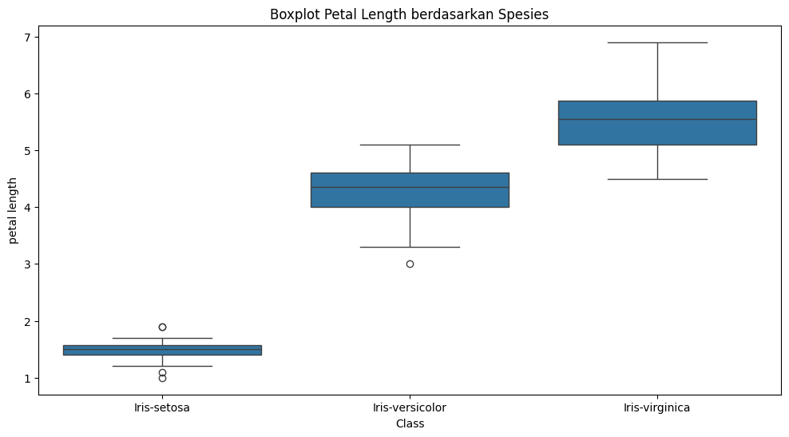

Data Understanding: Iris Dataset#
Pendahuluan#
Dataset Iris adalah salah satu dataset klasik dalam bidang data science dan machine learning. Dataset ini pertama kali diperkenalkan oleh ahli statistik Ronald Fisher pada tahun 1936 sebagai contoh untuk analisis diskriminan linier. Dataset ini berisi pengukuran dari 150 bunga iris dari tiga spesies: Iris-setosa, Iris-versicolor, dan Iris-virginica. Setiap sampel memiliki empat fitur pengukuran (dalam cm): panjang sepal (sepal_length), lebar sepal (sepal_width), panjang petal (petal_length), dan lebar petal (petal_width), serta label spesies.
Dataset ini berisi data yang mencakup header dan 150 baris data (50 per spesies). Tidak ada nilai hilang (missing values), dan dataset ini seimbang (balanced).
Sumber dataset: Kaggle (https://www.kaggle.com/datasets/data855/heart-disease?resource=download)
Deskripsi Data#
Jumlah Baris: 150 (50 untuk setiap spesies).
Jumlah Kolom: 5.
Kolom dan Tipe Data:
sepal_length: Numerik (float), panjang sepal dalam cm.sepal_width: Numerik (float), lebar sepal dalam cm.petal_length: Numerik (float), panjang petal dalam cm.petal_width: Numerik (float), lebar petal dalam cm.species: Kategorikal (string), nama spesies bunga (Iris-setosa, Iris-versicolor, Iris-virginica).
Missing Values: Tidak ada (0 untuk semua kolom).
Distribusi Kelas: Seimbang, dengan 50 sampel per spesies.
Duplikat: Tidak ada duplikat signifikan berdasarkan analisis awal.
Dataset ini tidak memiliki outlier (nilai aneh) yang terlalu ekstrem, tapi ada variasi wajar antar jenis.
Statistik Deskriptif#
Saya hitung statistik dasar untuk melihat gambaran datanya. Ini termasuk rata-rata, standar deviasi (seberapa bervariasi), nilai terkecil, terbesar, dan kuartil (seperti median).
Statistik Keseluruhan Dataset#
Statistik |
sepal_length |
sepal_width |
petal_length |
petal_width |
|---|---|---|---|---|
count |
150 |
150 |
150 |
150 |
mean |
5.843 |
3.057 |
3.758 |
1.199 |
std |
0.828 |
0.436 |
1.765 |
0.762 |
min |
4.3 |
2.0 |
1.0 |
0.1 |
25% |
5.1 |
2.8 |
1.6 |
0.3 |
50% |
5.8 |
3.0 |
4.35 |
1.3 |
75% |
6.4 |
3.3 |
5.1 |
1.8 |
max |
7.9 |
4.4 |
6.9 |
2.5 |
Observasi:
Fitur petal_length memiliki variabilitas tertinggi (std = 1.765), sementara sepal_width paling stabil (std = 0.436).
Nilai rata-rata sepal_length lebih tinggi daripada fitur lainnya.
Statistik Berdasarkan Spesies#
Saya pisah berdasarkan species untuk lihat perbedaannya.
Iris-setosa#
Statistik |
sepal_length |
sepal_width |
petal_length |
petal_width |
|---|---|---|---|---|
count |
50 |
50 |
50 |
50 |
mean |
5.006 |
3.428 |
1.462 |
0.246 |
std |
0.352 |
0.379 |
0.174 |
0.105 |
min |
4.3 |
2.3 |
1.0 |
0.1 |
25% |
4.8 |
3.2 |
1.4 |
0.2 |
50% |
5.0 |
3.4 |
1.5 |
0.2 |
75% |
5.2 |
3.675 |
1.575 |
0.3 |
max |
5.8 |
4.4 |
1.9 |
0.6 |
Iris-versicolor#
Statistik |
sepal_length |
sepal_width |
petal_length |
petal_width |
|---|---|---|---|---|
count |
50 |
50 |
50 |
50 |
mean |
5.936 |
2.770 |
4.260 |
1.326 |
std |
0.516 |
0.314 |
0.470 |
0.198 |
min |
4.9 |
2.0 |
3.0 |
1.0 |
25% |
5.6 |
2.525 |
4.0 |
1.2 |
50% |
5.9 |
2.8 |
4.35 |
1.3 |
75% |
6.3 |
3.0 |
4.6 |
1.5 |
max |
7.0 |
3.4 |
5.1 |
1.8 |
Iris-virginica#
Statistik |
sepal_length |
sepal_width |
petal_length |
petal_width |
|---|---|---|---|---|
count |
50 |
50 |
50 |
50 |
mean |
6.588 |
2.974 |
5.552 |
2.026 |
std |
0.636 |
0.322 |
0.552 |
0.275 |
min |
4.9 |
2.2 |
4.5 |
1.4 |
25% |
6.225 |
2.8 |
5.1 |
1.8 |
50% |
6.5 |
3.0 |
5.55 |
2.0 |
75% |
6.9 |
3.175 |
5.875 |
2.3 |
max |
7.9 |
3.8 |
6.9 |
2.5 |
Observasi:
Dari perbandingan ini, saya perhatikan Iris-setosa punya petal kecil banget dibanding yang lain, tapi sepalnya lebih lebar. Iris-virginica paling besar secara keseluruhan.
Matriks Korelasi#
Saya hitung korelasi untuk lihat seberapa saling terkait fitur-fiturnya. Nilai 1 artinya sangat terkait positif, -1 negatif, 0 tidak terkait.
sepal_length |
sepal_width |
petal_length |
petal_width |
|
|---|---|---|---|---|
sepal_length |
1.000 |
-0.118 |
0.872 |
0.818 |
sepal_width |
-0.118 |
1.000 |
-0.428 |
-0.366 |
petal_length |
0.872 |
-0.428 |
1.000 |
0.963 |
petal_width |
0.818 |
-0.366 |
0.963 |
1.000 |
Observasi:
Korelasi tinggi antara petal_length dan petal_width (0.963), menunjukkan keduanya sangat terkait.
Sepal_length berkorelasi positif kuat dengan fitur petal.
Sepal_width berkorelasi negatif dengan fitur lainnya, terutama petal.
Visualisasi Data#
Visualisasi membantu memahami distribusi dan hubungan data. Berikut saran dan contoh kode Python menggunakan Pandas, Matplotlib, dan Seaborn (jalankan di Jupyter Notebook atau script Python untuk generate gambar, lalu upload ke GitHub).
1. Histogram untuk Setiap Fitur#
Menunjukkan distribusi nilai.
import pandas as pd
import matplotlib.pyplot as plt
# Upload file di Colab
from google.colab import files
files.upload()
# Baca data
df = pd.read_excel("data_iris.xlsx", sheet_name="Sheet1")
# Plot histogram
df.hist(figsize=(10, 8), edgecolor="black")
plt.suptitle("Histogram Fitur Iris Dataset")
plt.savefig("histograms.png", dpi=300)
plt.show()
---------------------------------------------------------------------------
KeyboardInterrupt Traceback (most recent call last)
/tmp/ipython-input-1456129473.py in <cell line: 0>()
4 # Upload file di Colab
5 from google.colab import files
----> 6 files.upload()
7
8 # Baca data
/usr/local/lib/python3.12/dist-packages/google/colab/files.py in upload(target_dir)
70 """
71
---> 72 uploaded_files = _upload_files(multiple=True)
73 # Mapping from original filename to filename as saved locally.
74 local_filenames = dict()
/usr/local/lib/python3.12/dist-packages/google/colab/files.py in _upload_files(multiple)
162
163 # First result is always an indication that the file picker has completed.
--> 164 result = _output.eval_js(
165 'google.colab._files._uploadFiles("{input_id}", "{output_id}")'.format(
166 input_id=input_id, output_id=output_id
/usr/local/lib/python3.12/dist-packages/google/colab/output/_js.py in eval_js(script, ignore_result, timeout_sec)
38 if ignore_result:
39 return
---> 40 return _message.read_reply_from_input(request_id, timeout_sec)
41
42
/usr/local/lib/python3.12/dist-packages/google/colab/_message.py in read_reply_from_input(message_id, timeout_sec)
94 reply = _read_next_input_message()
95 if reply == _NOT_READY or not isinstance(reply, dict):
---> 96 time.sleep(0.025)
97 continue
98 if (
KeyboardInterrupt:
2. Boxplot Berdasarkan Spesies#
Menunjukkan distribusi dan outlier.
plt.figure(figsize=(12, 6))
sns.boxplot(x='Class', y='petal length', data=df)
plt.title('Boxplot Petal Length berdasarkan Spesies')
plt.savefig('boxplot_petal_length.png')
plt.show()

3. Scatter Plot#
Menunjukkan hubungan antar fitur, diwarnai berdasarkan spesies.
sns.scatterplot(x='sepal length', y='sepal width', hue='Class', data=df)
plt.title('Scatter Plot Sepal Length vs Width')
plt.savefig('scatter_sepal.png')
plt.show()

4. Pairplot#
Visualisasi multivariate.
sns.pairplot(df, hue='Class')
plt.suptitle('Pairplot Iris Dataset')
plt.savefig('pairplot.png')
plt.show()

5. Heatmap Korelasi#
corr = df.corr(numeric_only=True)
sns.heatmap(corr, annot=True, cmap='coolwarm')
plt.title('Heatmap Korelasi')
plt.savefig('correlation_heatmap.png')
plt.show()

Insight yang Saya Dapat Dari analisis saya:
*Fitur petal lebih bagus buat bedain jenis bunga daripada sepal, karena * Iris-setosa petalnya kecil banget, sementara yang lain lebih besar dengan sedikit tumpang tindih. Petal_length dan petal_width sangat mirip, mungkin bisa digabung kalau perlu. Ada sedikit nilai aneh di sepal_width, tapi tidak masalah besar. Dataset ini seimbang, jadi cocok buat model tanpa bias. Selanjutnya, bisa dipakai untuk clustering atau klasifikasi, karena polanya mudah dilihat.